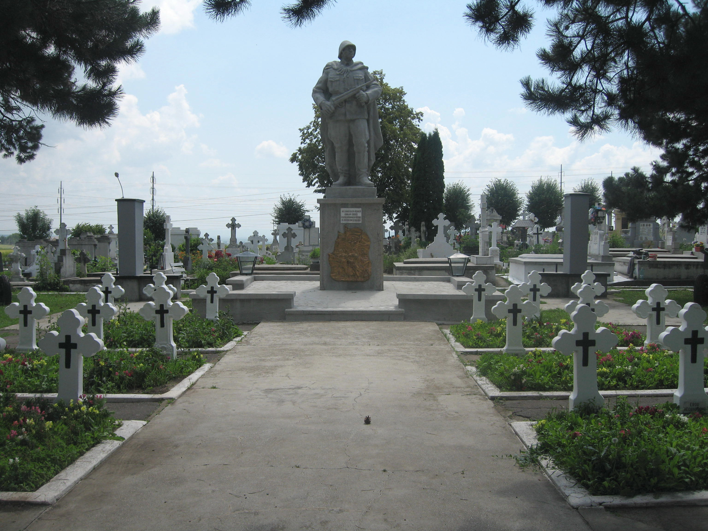

<!DOCTYPE html>
<html>
<head>
    
    <meta http-equiv="content-type" content="text/html; charset=UTF-8" />
    <script src="https://cdn.jsdelivr.net/npm/leaflet@1.9.3/dist/leaflet.js"></script>
    <script src="https://code.jquery.com/jquery-3.7.1.min.js"></script>
    <script src="https://cdn.jsdelivr.net/npm/bootstrap@5.2.2/dist/js/bootstrap.bundle.min.js"></script>
    <script src="https://cdnjs.cloudflare.com/ajax/libs/Leaflet.awesome-markers/2.0.2/leaflet.awesome-markers.js"></script>
    <link rel="stylesheet" href="https://cdn.jsdelivr.net/npm/leaflet@1.9.3/dist/leaflet.css"/>
    <link rel="stylesheet" href="https://cdn.jsdelivr.net/npm/bootstrap@5.2.2/dist/css/bootstrap.min.css"/>
    <link rel="stylesheet" href="https://netdna.bootstrapcdn.com/bootstrap/3.0.0/css/bootstrap-glyphicons.css"/>
    <link rel="stylesheet" href="https://cdn.jsdelivr.net/npm/@fortawesome/fontawesome-free@6.2.0/css/all.min.css"/>
    <link rel="stylesheet" href="https://cdnjs.cloudflare.com/ajax/libs/Leaflet.awesome-markers/2.0.2/leaflet.awesome-markers.css"/>
    <link rel="stylesheet" href="https://cdn.jsdelivr.net/gh/python-visualization/folium/folium/templates/leaflet.awesome.rotate.min.css"/>
    
            <meta name="viewport" content="width=device-width,
                initial-scale=1.0, maximum-scale=1.0, user-scalable=no" />
            <style>
                #map_b0607b014ce575d1b423ad6465429394 {
                    position: relative;
                    width: 100.0%;
                    height: 100.0%;
                    left: 0.0%;
                    top: 0.0%;
                }
                .leaflet-container { font-size: 1rem; }
            </style>

            <style>html, body {
                width: 100%;
                height: 100%;
                margin: 0;
                padding: 0;
            }
            </style>

            <style>#map {
                position:absolute;
                top:0;
                bottom:0;
                right:0;
                left:0;
                }
            </style>

            <script>
                L_NO_TOUCH = false;
                L_DISABLE_3D = false;
            </script>

        
</head>
<body>
    
    
            <div class="folium-map" id="map_b0607b014ce575d1b423ad6465429394" ></div>
        
</body>
<script>
    
    
            var map_b0607b014ce575d1b423ad6465429394 = L.map(
                "map_b0607b014ce575d1b423ad6465429394",
                {
                    center: [47.65, 26.25],
                    crs: L.CRS.EPSG3857,
                    ...{
  "zoom": 8,
  "zoomControl": true,
  "preferCanvas": false,
}

                }
            );

            

        
    
            var tile_layer_76f19e189a9b2c1e6c722bbf1ec8b420 = L.tileLayer(
                "https://tile.openstreetmap.org/{z}/{x}/{y}.png",
                {
  "minZoom": 0,
  "maxZoom": 19,
  "maxNativeZoom": 19,
  "noWrap": false,
  "attribution": "\u0026copy; \u003ca href=\"https://www.openstreetmap.org/copyright\"\u003eOpenStreetMap\u003c/a\u003e contributors",
  "subdomains": "abc",
  "detectRetina": false,
  "tms": false,
  "opacity": 1,
}

            );
        
    
            tile_layer_76f19e189a9b2c1e6c722bbf1ec8b420.addTo(map_b0607b014ce575d1b423ad6465429394);
        
    
            var marker_a6000023e02e686c78fa297d3d9cb739 = L.marker(
                [47.640212, 26.2727771],
                {
}
            ).addTo(map_b0607b014ce575d1b423ad6465429394);
        
    
        var popup_07ada484ba42b8ba2ee872f21be86ed9 = L.popup({
  "maxWidth": 350,
});

        
            
                var html_51b59ad1d93390b5886d501496e21921 = $(`<div id="html_51b59ad1d93390b5886d501496e21921" style="width: 100.0%; height: 100.0%;">         <br>         <b>Cimitirul Eroilor din Suceava</b><br>         <i>Municipiul Suceava</i><br><br>         Categorie: Cimitir al eroilor<br>         Tip monument: Ansamblu<br>         Perioada: Primul Război Mondial<br>         Eroi omagiați: Eroi români și străini căzuți în Primul Război Mondial (1916–1918), aparținând Armatei Române și armatelor aliate și inamice.<br>         An ridicare: 1925<br>         Inițiator / Autor: Ministerul Apărării Naționale – prin Societatea „Cultul Eroilor”<br>         <br>         Cimitirul Eroilor din Suceava este un ansamblu comemorativ dedicat militarilor căzuți în Primul Război Mondial. Acesta cuprinde morminte individuale și comune, monumente funerare și elemente simbolice specifice cultului eroilor. Este loc de desfășurare a ceremoniilor militare și religioase cu ocazia Zilei Eroilor și a altor evenimente comemorative.<br>         <br><br><a href="galerii/monument_2.html" target="_blank"><b>Vezi galerie</b></a><br>Poze locale salvate: 2</div>`)[0];
                popup_07ada484ba42b8ba2ee872f21be86ed9.setContent(html_51b59ad1d93390b5886d501496e21921);
            
        

        marker_a6000023e02e686c78fa297d3d9cb739.bindPopup(popup_07ada484ba42b8ba2ee872f21be86ed9)
        ;

        
    
    
            marker_a6000023e02e686c78fa297d3d9cb739.bindTooltip(
                `<div>
                     Cimitirul Eroilor din Suceava
                 </div>`,
                {
  "sticky": true,
}
            );
        
    
            var marker_0628c3a9ad2b47995170fcda4c013a57 = L.marker(
                [47.6475, 26.2591],
                {
}
            ).addTo(map_b0607b014ce575d1b423ad6465429394);
        
    
        var popup_9a824fd209bb1de397b4baba389a1d6f = L.popup({
  "maxWidth": 350,
});

        
            
                var html_d14b4e589a5adb9daeee56d8213e83e2 = $(`<div id="html_d14b4e589a5adb9daeee56d8213e83e2" style="width: 100.0%; height: 100.0%;">                  <b>Monumentul Eroilor - Suceava (exemplu)</b><br>         <i>Suceava</i><br><br>         Categorie: Monument central<br>         Tip monument: Statuie<br>         Perioada: Primul și Al Doilea Război Mondial<br>         Eroi omagiați: Eroii căzuți pentru patrie din municipiul Suceava<br>         An ridicare: 1925 (exemplu)<br>         Inițiator / Autor: Primăria Suceava (exemplu)<br>         <br>         Acesta este un monument de exemplu, introdus automat doar pentru a vedea cum arată un pin pe hartă. Poți să-l editezi sau să-l arhivezi / ștergi ulterior.<br>         <br><br><a href="galerii/monument_1.html" target="_blank"><b>Vezi galerie</b></a></div>`)[0];
                popup_9a824fd209bb1de397b4baba389a1d6f.setContent(html_d14b4e589a5adb9daeee56d8213e83e2);
            
        

        marker_0628c3a9ad2b47995170fcda4c013a57.bindPopup(popup_9a824fd209bb1de397b4baba389a1d6f)
        ;

        
    
    
            marker_0628c3a9ad2b47995170fcda4c013a57.bindTooltip(
                `<div>
                     Monumentul Eroilor - Suceava (exemplu)
                 </div>`,
                {
  "sticky": true,
}
            );
        
</script>
</html>